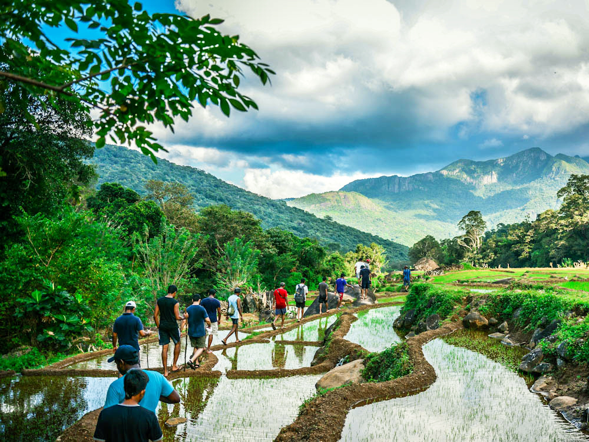

1. Meemure – A Village Beneath Lakegala
Kandy–Matale border, Central Sri Lanka
Tucked among the mountains of the Knuckles Range, Meemure is a traditional rural village surrounded by forests, streams, mountain slopes and paddy fields. Its setting beneath the distinctive Lakegala mountain makes the journey here feel very different from a conventional sightseeing tour.
Visitors can experience village walks, photography, bird watching, cycling and guided mountain excursions while seeing traditional agricultural practices and village life. Meemure is best approached as a slow, immersive experience rather than a quick stop.
Travel note: Access can be rough and weather-dependent. Arrange local guidance and suitable transport before travelling.